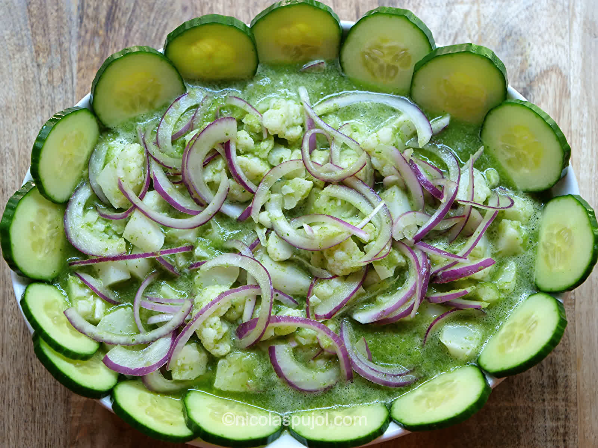

Description
A spicy, tangy ceviche made with shrimp, cucumber, serrano peppers, onions, and freshly squeezed citrus juices!
Ingredients
- 4 serrano peppers
- 3 jalapenos
- 4 large cucumber
- 2 lbs cooked shrimp
- Juice of 6 limes
- Juice of 3 Large Lemons
- 1/2 onion
- 1 bunch Cilantro
Instructions
- Wash peppers, cut off tips, throw in jalapenos and serranos into blender or food processor
- Add in onion, cilantro, and juice of 2 limes and 1 lemon and blend
- Dice cucumber and cut white onion in half and cut into thin slices.
- Add shrimp, diced cucumbers, thinly sliced onion, and juice blend into bowl, mix thoroughly.
- Serve on crunchy tostada or tortilla chips with avocado on the side.
- Enjoy!